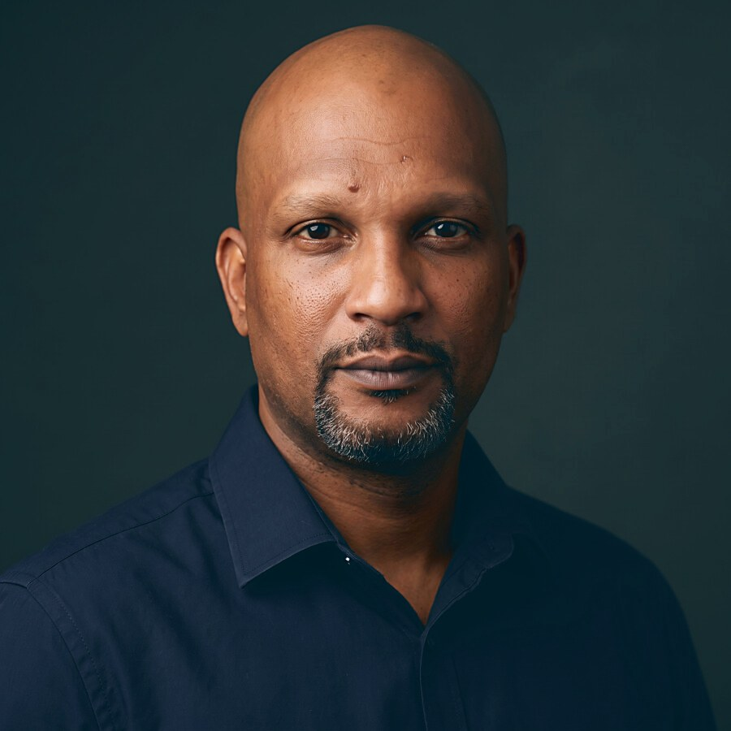

关于事务所
一家扎根法属圭亚那、服务本区域的项目工程事务所。
CIA, Conseil, Ingénierie et Assistance（咨询、工程与协助）在项目全周期中陪伴地方政府、企业与投资者：奠定项目基础的研究，使项目成为可能的融资，保障项目安全的程序，以及最终的实施。
工作方法
四个步骤，一个对接人。
- 01
倾听
三十分钟会谈，界定项目，并告诉您它是否站得住。如果站不住，您当天就会知道。
- 02
研判
一份书面报告，列明数字与依据。所引用的每一条规定均以报告出具之日为准核实，并注明出处。
- 03
搭建
完整的项目文件：材料、预算、程序、时间表、对接人。文件随时可以签署。
- 04
陪伴
跟进直至项目完成：执行、合规、资金到账、法规动态跟踪。
我们的原则
每一个项目都遵循的四条规则。
先有出处，再有观点。
我们的每一项陈述都有出处：一条法律条文，一个核实日期。没有出处的数字不会进入我们的报告。
拒绝也是服务的一部分。
如果我们认为一个项目无法获得融资，我们会在收费为其搭建方案之前就告诉您。
各司其职。
我们提供工程咨询与统筹协调。法律、会计与公证文书由注册执业的专业人士完成，由我们召集并掌控其时间表。
先有实质，再谈税收优惠。
没有真实经营，就没有任何方案：这是事务所的规矩。

为什么选择我们
在为地方政府提供咨询之前，我们曾亲自管理它们。
十五年以上的公共与私营部门管理经验，其中十年担任法属圭亚那三个市镇的总干事：Maripasoula、Iracoubo，以及拥有 780 名员工的 Matoury。Richard JOIGNY 了解市镇预算，因为他亲手编制过；了解公共采购，因为他亲自操作过；了解合法性审查，因为他亲自应对过。
他使用法语、英语、克里奥尔语和苏里南语（Sranan Tongo）工作。当谈判在帕拉马里博、乔治敦或马卡帕进行时，这一点很重要。
履历
十五年以上的管理经验，其中十年担任总干事。
集团负责人
CIA 及集团旗下各公司：私人安保与远程监控、收运与物流、培训、能源、农产品加工。
市镇总干事（Directeur général des services）
Matoury 市镇：780 名员工，35,000 名居民。统管全部市政部门、预算、人力资源与公共采购。
市镇总干事
Iracoubo 市镇：80 名员工，2,762 平方公里。农业开发项目、法定职能移交、财源战略。
顾问
为法属圭亚那与瓜德罗普的地方政府编制融资申请、开展市场研究、进行组织与财务审计。
市镇总干事
Maripasoula 市镇：180 名员工，18,500 平方公里。创建旅游局与社会福利中心，统筹 5,000 万欧元多年期投资计划。
行政与财务主管
混合联合体（SIZMM），后任 Macouria 市镇财务主管。ISEG 金融硕士。
专业团队
一家事务所，十余位专业人员。
事务所依托十余位技能各异的合作伙伴与专业人员。我们根据项目性质调用所需的专业力量，且仅调用所需。
建筑与公共工程
项目策划、施工跟踪、竣工验收、技术鉴定。
沟通与公众协商
策略、居民关系、危机沟通、内容制作。
职业培训
课程设计、资格认证、培训项目及其融资。
电信与数字化
基础设施、服务转型、行政机关数字化工具。
创新与生态转型
能源、废弃物资源化、循环经济、专项资金。
人身与财产安全
场所安保、远程监控、安保方案设计、合规。
集团
我们了解成本，因为我们自己也在支付。
CIA 是一家在法属圭亚那经营的集团的母公司，业务包括私人安保与远程监控、收运与物流、职业培训、能源、农产品加工。行政机关的实际办理时限、一名员工的全部用工成本、海关入市税（octroi de mer）的分量：这些我们每个月都在亲身经历，我们的建议也据此而来。